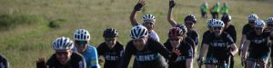

Welkom bij VCL
Ontdek de mooiste fietsroutes samen met enthousiaste fietsers
Over onze club
VCL is een gezellige club voor en door fietsliefhebbers die graag in groepsverband rijden.
In het seizoen fietsen we op de donderdagavond een van onze routes voor verschillende niveaus.
Er wordt in twee groepen gereden; piano, piano en gas op de lolly. In de piano, pianogroep wordt gemiddeld
tussen de 30 en 32 km/h gereden. De gas op de lolly groep rijdt gemiddeld 34 tot 36 km/u
Ook op zondagochtend wordt er vaak een tocht gemaakt.
We laten niemand achter. Bij een lekke band of een overhoopte slechte dag wordt er op je gewacht.
Onder normale omstandigheden wordt er wel van je verwacht dat je een gat na een bocht dicht kunt fietsten
Waarom bij ons fietsen?
Gezelligheid
Geniet van gezellige tochten met gelijkgestemde fietsers
Veiligheid
We rijden in een groep met duidelijke afspraken en een wegkapitein.
Variatie
Ontdek verschillende routes en landschappen in de regio